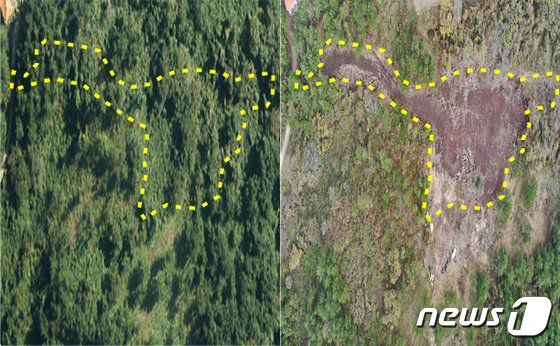

4. Policy: 2025 Jeju Master Plan
This is a learning diary for week 4.
I would like to find out how the environmental conservation policy of Jeju Island, South Korea is related to domestic and international plans and examine the recent illegal forest damage in Jeju Island and its solution.
4.1 Summary
4.1.1 How is Jeju? üèûÔ∏è
- Jeju island is a representative tourist city in South Korea.
- It is divided into residential, commercial, industrial, and conservation land. In conservation land, four Gotjawal areas with unique vegetation are distributed. üå≥üå≤
- Vegetation damage and increased Gotjawal erosion have recently occurred due to the construction of cultivated land, various development projects such as golf courses, roads, and visitors.
4.1.2 2025 Jeju Master Plan
- Creating an ecological map and building a GIS map
- Introduction of Total Environmental Resources System
- The development and application of ecological area ratio indicators at the spatial planning level to comprehensively induce the maintenance and improvement of the ecological functions of urban spaces.
- Allow development activities after creating alternative environmental resources in case of environmental damage.
- Designation of ‚ÄòEcological and Scenery Conservation Area‚Äô under the Natural Environment Conservation Act ü¶Ö
- Introduction of Landscape M.A. (Mater Architect) System and Landscape Advice System
- Active utilisation and management of spatial information by linking preservation ratings (regulating development activities on Jeju island followed by ordinances) with GIS Source: 2025 Jeju Master Plan
4.1.3 The 5th National Land Comprehensive Plan (2020~2040)
| Goal | A Smart, International City with a clean environment |
|---|---|
| Details | Creating a Global Clean Environment City |
| - Introduction of total environmental resources system | |
| - Establishment of an environment preservation system |
4.1.3 UN SDGs(Sustainable Development Goal 15 )
- Goal 15. LIFE ON LAND
- Biodiversity and ecosystems
sustainable management of the planet’s natural resources
protect, restore and promote sustainable use of terrestrial ecosystems
take urgent and significant action to reduce the degradation of natural habitats
halt the loss of biodiversity
- Forests
- promote international policy coordination and cooperation in order to achieve forest management
- Biodiversity and ecosystems
Source: “Goal 15 | Department of Economic and Social Affairs” (n.d.), UNDP
4.2 Application
- Illegal forest activities have recently increased, especially in the Gotjawal area, such as forest damage, prohibited mountainous area exclusive use, illegal access road construction, and unauthorized logging. ü™µü™ì
- Monitoring and cracking down on various illegal activities in the forest with aerial photographs using high-resolution drones. üì∏

- The local government of Jeju is currently establishing a total environmental resources system.
Note
A Total Environmental Resources System
- Maintaining the ratio of total environmental resources before and after developing a specific area on Jeju Island
A Future Plan
Year Plan 2023 Revision and enactment of ordinances and guidelines to establish an organisation and fund for a total environmental resources system 2024 Pilot operation of the total environmental resources system 2025 Operation of the total environmental resources system in earnest
4.3 Reflection
63% of South Korea is mountainous areas, and it is necessary to preserve excellent natural scenery. Therefore, many local governments in Korea have recently established spatial information systems to utilise for forest preservation and a crackdown on illegal activities, etc.
Among them, Jeju Island is a UNESCO-certified nature conservation area. World Natural Heritage Jeju
| 2002 | 2007 | 2010 |
|---|---|---|
| a biosphere reserve | a World Natural Heritage site | a UNESCO Global Geopark |
I have worked as a civil servant in Korea, and aerial photographs could not be used as legal proof when cracking down on illegal activities but were only a reference until a few years ago. However, the use of aerial photographs began to be legislated as the importance of using spatial information emerged.
Considering the development technology direction of remote sensing data I learned in class so far, the use of spatial information in policy will increase more and more. So, I thought I should also know how to use this information smartly.